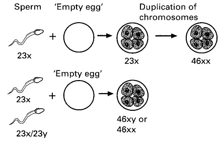
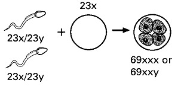
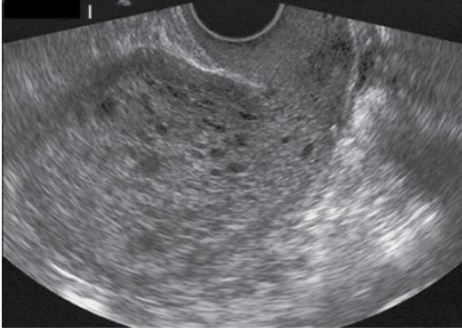
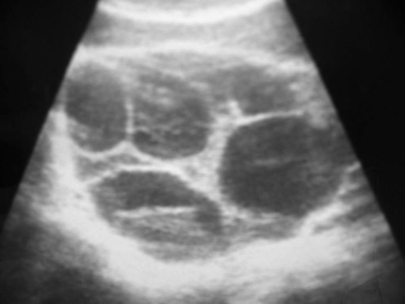

1ILOs of this chapter
By the end of this chapter the student should be able to:
- To understand the pathogenesis of molar pregnancy
- To be able to describe the clinical picture of GTD
- To be able to outline the management of this pregnancy associated disorder
2Definition
Tumors arising from the trophoblastic cells of the placenta.
Gestational Trophoblastic Disease (GTD) is an umbrella term for a spectrum of pregnancy-related tumors that originate from the abnormal proliferation of trophoblast — the outer layer of the blastocyst that would normally form the placenta.
3Classifications
GTD is divided into two broad categories: Benign (hydatidiform mole) and Malignant (gestational trophoblastic tumor).
A. Benign — Hydatidiform Mole
- Complete hydatidiform mole
- Partial hydatidiform mole
B. Malignant — Gestational Trophoblastic Tumor (GTT)
- Invasive mole
- Choriocarcinoma
- Placental site trophoblastic tumor (PSTT)
4Hydatidiform Mole (Vesicular Mole)
Definition
It is a benign tumor of trophoblastic tissue in which hydropic degeneration of the chorionic villi occurs.
The word "hydatid" derives from the Greek hydatis ("a drop of water") — referring to the characteristic fluid-filled vesicles that replace normal chorionic villi. "Vesicular mole" is the descriptive synonym.
5Incidence
Molar pregnancy is rare but not negligible. The two subtypes differ in frequency.
Reported per pregnancy. The partial mole is roughly three times more common than the complete mole, but the complete mole has a much higher risk of malignant sequelae.
6Types — Complete & Partial Mole
The two histological types differ in their genetic origin, fetal involvement, and clinical course.
(i) Complete Hydatidiform Mole
- The uterus is full of vesicles.
- No embryo is present.
- It is the result of fertilization of an anucleated ovum (has no chromosomes) with a normal sperm → duplicate → 46 chromosomes of paternal origin only.
(ii) Partial Hydatidiform Mole
- A part of trophoblastic tissue only shows molar changes.
- A fetus or parts of it is present.
- It is the result of fertilization of an ovum by 2 sperms → the chromosomal number is 69 chromosomes.


7Risk Factors
Five risk factors are recognised for molar pregnancy.
- Age: the most consistent risk factor in all regions and races — pregnancies below the age of 16 years and above the age of 45 years have the highest risk.
- Previous GTN (Gestational Trophoblastic Neoplasia):
- Following one mole, the risk is less than 2%.
- Following two moles, the risk rises to 16%.
- Following three moles, the risk becomes 50%.
- Family history
- Dietary factor: low intake of animal fat may be associated with increased risk of complete mole.
- Ethnic groups: more common in Asian populations.
8Pathology
Gross appearance
The uterus is full of thin walled, translucent, grape-like vesicles of different sizes.
Microscopic appearance
- Trophoblastic proliferation, with mitotic activity affecting both syncytial and cytotrophoblastic layers.
- Leads to excessive secretion of:
- hCG
- Chorionic thyrotrophin
- Progesterone
Ovarian effect
- The high hCG → multiple theca lutein cysts.
- The high hCG → exaggeration of the early pregnancy symptoms and signs.
9The GTD Spectrum at a Glance
The hydatidiform mole is the most common form of GTD, but the disease category spans a wider spectrum of pathology.
![Six-panel educational diagram titled 'Spectrum of Gestational Trophoblastic Neoplasia' showing: (1) Complete Hydatidiform Mole — uterus filled with grape-like vesicles, no embryo; (2) Partial Hydatidiform Mole — uterus with fetus and adjacent molar tissue; (3) Coexistent Mole and Live Fetus — twin pregnancy with one normal conceptus and one molar; (4) Invasive Mole — molar mass penetrating into the myometrium; (5) Choriocarcinoma — uterine tumor with hematogenous metastasis to the lungs; (6) Placental Site Trophoblastic Tumor — solid fleshy mass at the placental implantation site.](../../../../../extracted/assets/extracted_images/07_gestational_trophoblastic_disease/gtd_spectrum.jpg)
| Entity | Nature | Key Behaviour |
|---|---|---|
| Complete hydatidiform mole | Benign | No embryo · all-paternal 46,XX · 16% malignant transformation risk |
| Partial hydatidiform mole | Benign | Fetus present · triploid 69,XXX/XXY · 0.5% malignant transformation risk |
| Invasive mole | Malignant | Penetrates myometrium locally · can metastasise |
| Choriocarcinoma | Malignant | Hematogenous spread · classic lung metastases |
| Placental site trophoblastic tumor | Malignant | Solid mass at implantation site · infiltrates myometrium |
10Clinical Features
The classic clinical picture of a complete hydatidiform mole:
- Amenorrhea.
- Vaginal bleeding.
- Symptoms of pregnancy in exaggerated form.
- Early onset pre-eclampsia before 20th weeks.
- Hyperemesis gravidarum.
- Hyperthyroidism.
- Complications of theca lutein cyst of ovary (rupture, torsion).
11Examinations
Abdominal examination
- Uterus is large and its consistency is soft and doughy.
- No fetal part or fetal heart can be detected.
Pelvic examination
- Sometimes grape like vesicles of mole may be detected which confirm the diagnosis.
12Investigations — Ultrasound
Ultrasound is the cornerstone of diagnosis.
- Snow storm appearance — uterine cavity filled with multiple sonolucent areas of varying size and shape.
- Absence of fetus.
- Theca lutein cyst of ovary — bilateral multicystic ovarian enlargement due to hyperstimulation by hCG.


13Investigations — β-human Chorionic Gonadotrophin (β-hCG)
β-hCG is highly elevated (> 100 000 mIU/mL) in complete hydatidiform mole.
This is dramatically higher than the hCG level of a normal pregnancy of the same gestational age, and reflects the exuberant trophoblastic proliferation.
14Treatment
Evacuation of the uterus
Evacuation by suction curettage is performed under general anesthesia with available blood.
- Suction curettage is the method of choice for uterine evacuation in molar pregnancy.
- Cross-matched blood must be available because of the high risk of hemorrhage.
Hysterectomy
Hysterectomy is indicated for:
- Older women or those of high parity.
- Severe uncontrolled hemorrhage.
Theca lutein cysts
Theca lutein cysts regress in size and need no special treatment, unless complicated (rupture, torsion).
Histopathological examination
All evacuated specimens must be sent for histopathological examination to confirm the diagnosis and rule out choriocarcinoma.
Anti-D prophylaxis
Anti-D should be given to non-sensitized Rh negative mother.
15Postmolar Follow-up
Strict surveillance after evacuation is mandatory because of the malignant transformation risk.
- hCG measurement every 1 to 2 weeks until it becomes –ve.
- Monthly for 1 year after hCG becomes –ve is recommended for all patients with molar gestation.
Aim is to detect any changes suggestive of malignancy because:
- 16% of complete hydatidiform mole and
- 0.5% of partial hydatidiform mole
undergo malignant transformation.
16Contraception
The combined oral pills is the method of choice.
Combined oral contraceptives (COC) are preferred during the postmolar surveillance period because:
- They are highly effective at preventing pregnancy (which would confuse hCG follow-up).
- They regulate withdrawal bleeding, allowing earlier detection of abnormal uterine bleeding as a warning sign.
17Chemotherapy Indications
Chemotherapy is indicated if any of the following are present:
- hCG titer rises or plateaus during follow-up.
- Evidence of choriocarcinoma.
- Persistent uterine bleeding and positive hCG.
18Subsequent Pregnancy
In any subsequent pregnancy after a molar gestation:
An early ultrasound should be performed in all subsequent pregnancies because of the 1–2% risk of recurrence.
- Confirm the new pregnancy is intrauterine.
- Exclude a new molar pregnancy at the earliest possible gestational age.
- Send the placenta / products of conception for histopathology after delivery.
Student Activity
19Student Activity
Each group of students is requested to search for a case report on gestational trophoblastic disease across the web to be discussed at bedside teaching part of the clinical round.
Suggested search strategy:
- PubMed / Google Scholar — case reports of complete / partial hydatidiform mole.
- Look for: presentation, β-hCG level, ultrasound findings, management, and outcome.
- Note the malignant transformation rate and the postmolar follow-up protocol used.
References & Resources
20References & Resources
Source
- Book Obstetrics 2025-2026, Chapter 07 — Gestational Trophoblastic Disease (source textbook for this infographic).
Self-Assessment Questions
Source Images (extracted from source PDF, no watermarks, on-topic)
- img-001.jpg — Pathogenesis of the Complete Mole (monospermic vs dispermic pathways).
- img-002.jpg — Pathogenesis of the Partial Mole (dispermic → 69,XXX/XXY).
- img-003.jpg — Snowstorm appearance on ultrasound.
- img-004.jpg — Bunch-of-grapes / honeycomb vesicular pattern on ultrasound.
- img-000.jpg — Spectrum of Gestational Trophoblastic Neoplasia (six-panel overview).
Source Images Omitted
- None — all five extracted images were on-topic and free of watermarks; all five were retained.